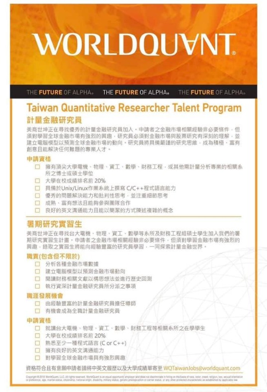

數學的逆襲
直播之前先聊一個話題～
過去許多台灣數理表現優異的孩子父母考慮到將來工作出路，多以醫科電機為首選，數學只是進入這些科系的重要工具。但近二、三十年來，數學這門學科演出大逆襲，從就業市場的陋巷，晉身到了最高殿堂。
很多人都知道 現今世界幾家最重要的大型科技公司：
蘋果 谷歌 臉書 雅馬遜 微軟 華為 阿里 騰訊 今日頭條...
都以高薪爭取數學與編程的高手。
「演算法」「晶片設計」「通訊原理」...背後的核心基礎便是～數學～
數學分析 組合學 微積分 線性代數 機率
都是程式設計、人工智慧、機器學習的理論基礎。
我們一位在AMC AIME 取得非常高分的學生，是程式設計的頂尖高手，拿到IOI（國際資訊奧林匹亞競賽）滿分金牌，順利進入全球最頂尖的大學。
一般人不熟悉的是，其實金融投資圈對於數學與程式高手的獵取更是快狠準！譬如著名的投行高盛。
他們交易部門的傳統交易員幾乎已絕種，全部改聘程式設計師，2018年他們全球3.6萬員工 程式設計師就9000人。
其實不只高盛如此，這早就是華爾街的常態，這些投行的待遇如何呢？
我們來看一下全美金融業打工仔年薪鄙視鏈：
6萬美金起跳的四大會計事務所
9萬美金起跳的管理顧問行業
都比不過12~16萬美金的投行IBD(投資部門）
所以九大投行（高盛 摩根史丹利...）的錄取率只有1%
但它們的薪資與津貼都被一家非典型的金融公司輾壓
～Jane Street
創立於2000年的Jane Street是一家自營交易公司，目前團隊人數已經超過了1000人，在紐約、倫敦、香港、阿姆斯特丹都設立了辦公室。
根據網路訊息
這家公司intern月薪為145k人民幣 外加每周$500的津貼。
你沒看錯，抵上台灣初級公務員年薪。
Jane Street 的 Entry Level 年薪也很高，據統計早在去年，Base就美金200k，外加100k簽約獎金，以及 $100-150k 的績效獎金。
這家公司的訊息很少，但因為待遇太令人瞠目結舌，所以還是有一些消息在網上流傳出來，非常有趣的是，因為文章作者發生計算上的小錯誤，所以很多留言在嘲笑作者一定是搞錯小數點的位數，他們認為月薪不可能是145K 應該是14.5K，但我在這邊可以告訴大家～～小數點位置沒有錯。
我兒子的學弟是IMO金牌，暑假就拿到JS這公司的intern 後來又拿到return，月薪就是這個行情。
Jane Street是一家金融公司，但是非常高科技，裡面都是非傳統交易員，多是出身數學、物理、計算機科系，人數很少，進入門檻極高，故一直被視為「華爾街最神秘的交易公司」之一（另一家是Renaissance Technologies LLC）。
而且除了薪資高之外 Jane Street各方面的規格也都很高：
第一 福利待遇打遍華爾街無敵手
工資比華爾街的投行高很多，基本沒有公司能與其相比因此員工很少跳槽離職，新人非常難進。
第二 非target school的不要 而且標準很高
即使著名的Yale即便在目標校list上 最近幾年也沒招收過人。
第三 Dress code？不好意思沒聽說過
員工不必西裝革履，每天可以T恤短褲人字拖，辦公室里有吃不盡的零食飲料，廚房還有精心烹飪的各國美食，完全是頂級網路公司的規格。
網路上也提到
Jane Street的面試題遠遠難過Google 而且還有很多tricky題，故意出一些無解的題目考你反應，而根據我聽到的實際經驗，面試時一點金融知識都不考，也不跟你扯什麼領導力或個人特質，全部就考機率、統計 、排列組合、期望值，這很意外嗎？ 不！
我們另外找一家有在台灣招聘的WorldQuant為例(下圖)，他們完全不要傳統財經背景的學生，而是指定電機、數學、物理、資工、財務工程等科系，一般來說新人年薪就是200萬起跳，不懂金融？ 沒關係！進來再學，但數理能力請先準備好。
所以，最後我只想提醒：
不要再賣弄可笑的無知 說數學只是為了考試
未來買菜用不到三角函數 微積分了….
https://www.facebook.com/groups/695697124716309/permalink/702538584032163/
